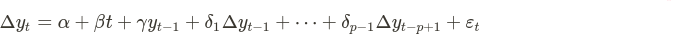
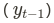
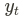
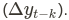
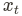
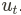
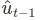

There are several methods to test for cointegration, we will focus on explaining three that are commonly used.
The first method we will explain is called the Augmented Dickey-Fuller test or, in short, ADF test. Here's the explanation of the ADF test from Wikipedia.
Augmented Dickey-Fuller test
In statistics and econometrics, an augmented Dickey–Fuller test (ADF) tests the null hypothesis that a unit root is present in a time series sample. The alternative hypothesis is different depending on which version of the test is used, but is usually stationarity or trend-stationarity. It is an augmented version of the Dickey–Fuller test for a larger and more complicated set of time series models.
The augmented Dickey–Fuller (ADF) statistic, used in the test, is a negative number. The more negative it is, the stronger the rejection of the hypothesis that there is a unit root at some level of confidence.
Testing procedure
The testing procedure for the ADF test is the same as for the Dickey–Fuller test but it is applied to the model.

where α is a constant, β the coefficient on a time trend and p the lag order of the autoregressive process. Imposing the constraints α = 0 and β = 0 corresponds to modeling a random walk and using the constraint β = 0 corresponds to modeling a random walk with a drift. Consequently, there are three main versions of the test, analogous to the ones discussed on Dickey–Fuller test (see that page for a discussion on dealing with uncertainty about including the intercept and deterministic time trend terms in the test equation.)
By including lags of the order p the ADF formulation allows for higher-order autoregressive processes. This means that the lag length p has to be determined when applying the test. One possible approach is to test down from high orders and examine the t-values on coefficients. An alternative approach is to examine information criteria such as the Akaike information criterion, Bayesian information criterion, or the Hannan–Quinn information criterion.
The unit root test is then carried out under the null hypothesis γ = 0 against the alternative hypothesis of γ < 0. Once a value for the test statistic
is computed it can be compared to the relevant critical value for the Dickey-Fuller test. As this test is asymmetrical, we are only concerned with the negative values of our test statistic DFτ. If the calculated test statistic is less (more negative) than the critical value, then the null hypothesis of γ = 0 is rejected and no unit root is present.
Intuition
The intuition behind the test is that if the series is characterized by a unit root process then the lagged level of the series  will provide no relevant information in predicting the change in  besides the one obtained in the lagged changes  In this case, the γ = 0 and the null hypothesis is not rejected. In contrast, when the process has no unit root, it is stationary and hence exhibits reversion to the mean - so the lagged level will provide relevant information in predicting the change of the series and the null of a unit root will be rejected.
More rigorous mathematical analysis
The parts above are directly quoted from the Wikipedia article of ADF test.
However, a more intensive mathematical analysis of Dickey and Fuller tests, as well as the augmented one, can be found in this linked article, pages 9-12.
Now, let's have look at another statistical method for finding cointegration known as Engle–Granger two-step method.
Engle–Granger two-step method
If  and are non-stationary and Order of integration d=1, then a linear combination of them must be stationary for some value of β and  . In other words:
where is stationary.
If we knew β, we could just test it for stationarity with something like a Dickey–Fuller test and be done. But because we don't know β, we must estimate this first, generally by using ordinary least squares[clarification needed], and then run our stationarity test on the estimated series.
A second regression is then run on the first differenced variables from the first regression, and the lagged residuals  is included as a regressor.
More rigorous mathematical analysis
The parts above are directly quoted from the Wikipedia article of ADF test.
However, a more intensive mathematical analysis of The Engle and Granger approach can be read from the linked article.